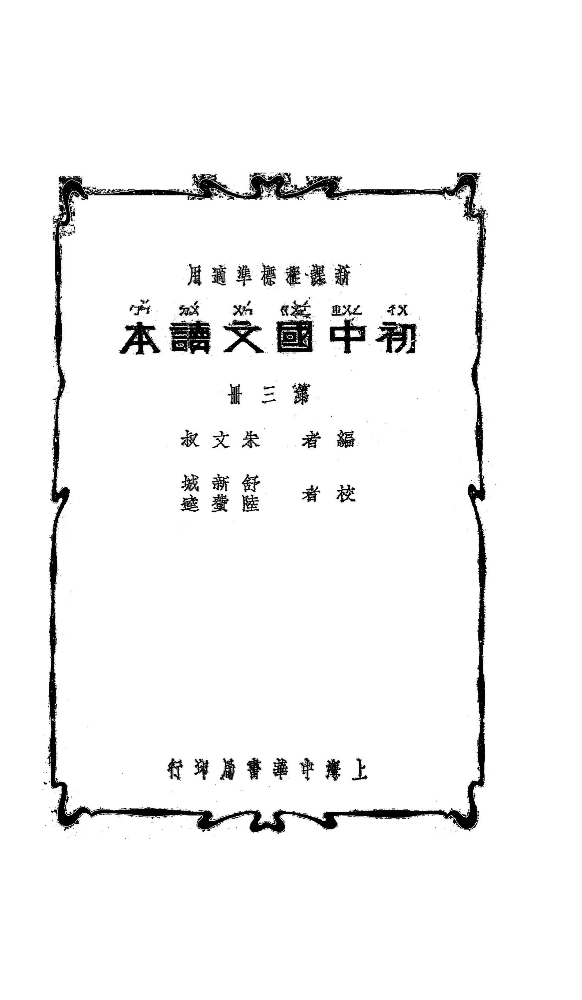

Occurrences
2
Exact minzu hits in this book

Textbook
This view contains all KWIC results for 民族 in this book, followed by the book's individual frequency result.
This table lists every minzu KWIC result found in this textbook.
| No. | Left context | Keyword | Right context |
|---|---|---|---|
| 395 | 蹟;第四課寫現代課從爲軍劇靑年同仇敵愾的行動;末二課爲本任公畫像贊幷序述懷及詠史之壯烈詩詞:皆以喚起 | 民族 | 精神爲中心。從軍情記敍用應敍記記敍記敍敍記記敍記敍記敍揮發的神精族民赴敵組八第詞三首訴裏情沁國春抒情 |
| 396 | 他有意志,他能支配他自己一切的行動,不至於像其他生物只能隨着造化變遷,存亡盛衰不能自主。所以無論任何 | 民族 | ,只要他自己努力,能發揮他的特長·能適應他的環境,無有不繁榮發達的道理。我們中|國,在世界各國中,人 |
Occurrences
2
Exact minzu hits in this book
Analysis chars
41,048
Cleaned characters used as denominator
Per 10k chars
0.49
Normalized frequency
| Subject | Language Readers |
|---|---|
| Textbook | 初中国文读本 |
| Keyword | minzu (民族) |
| Raw occurrences | 2 |
| Occurrences per 10,000 analysis characters | 0.49 |